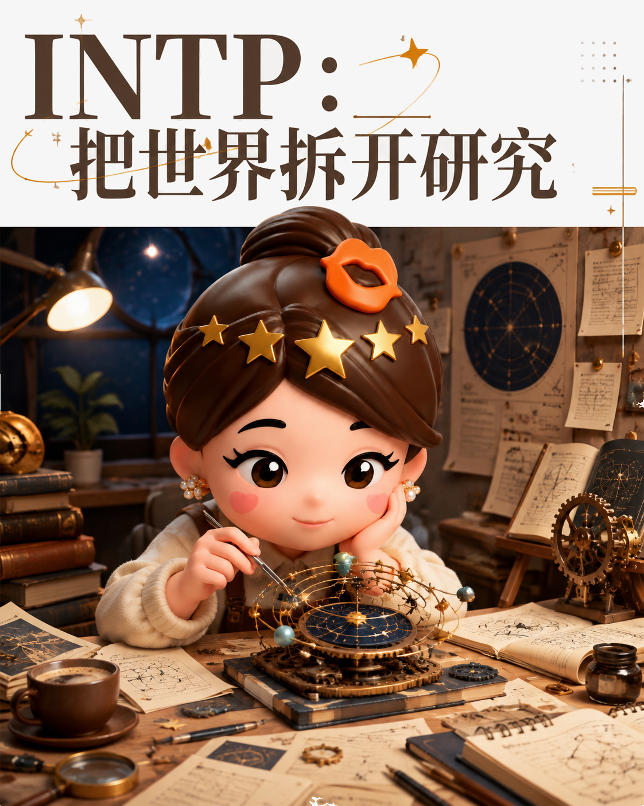
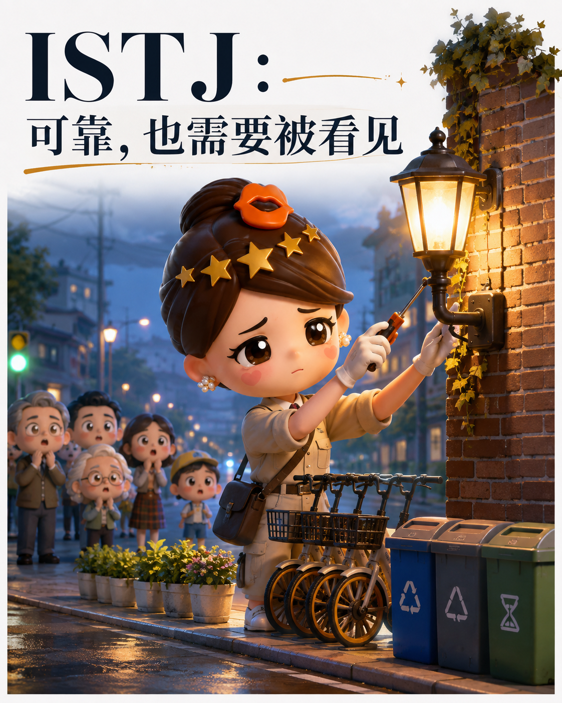
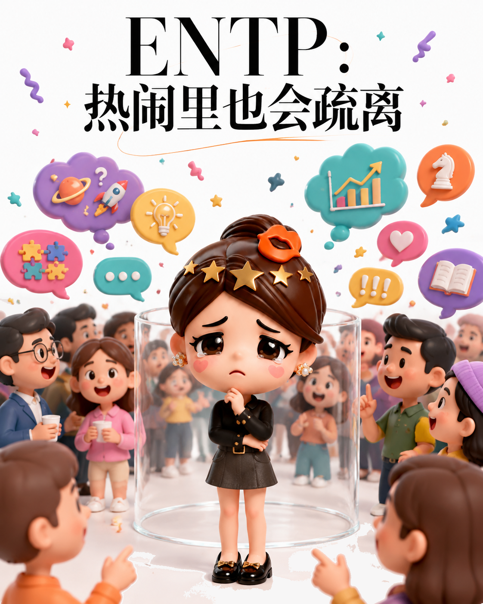
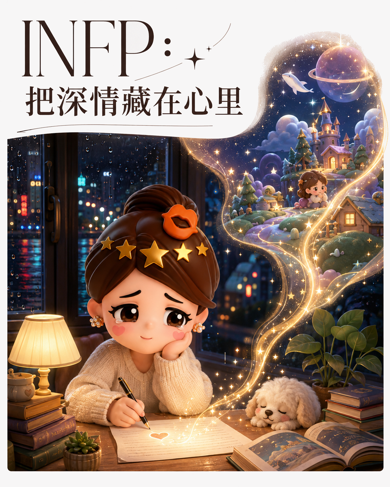
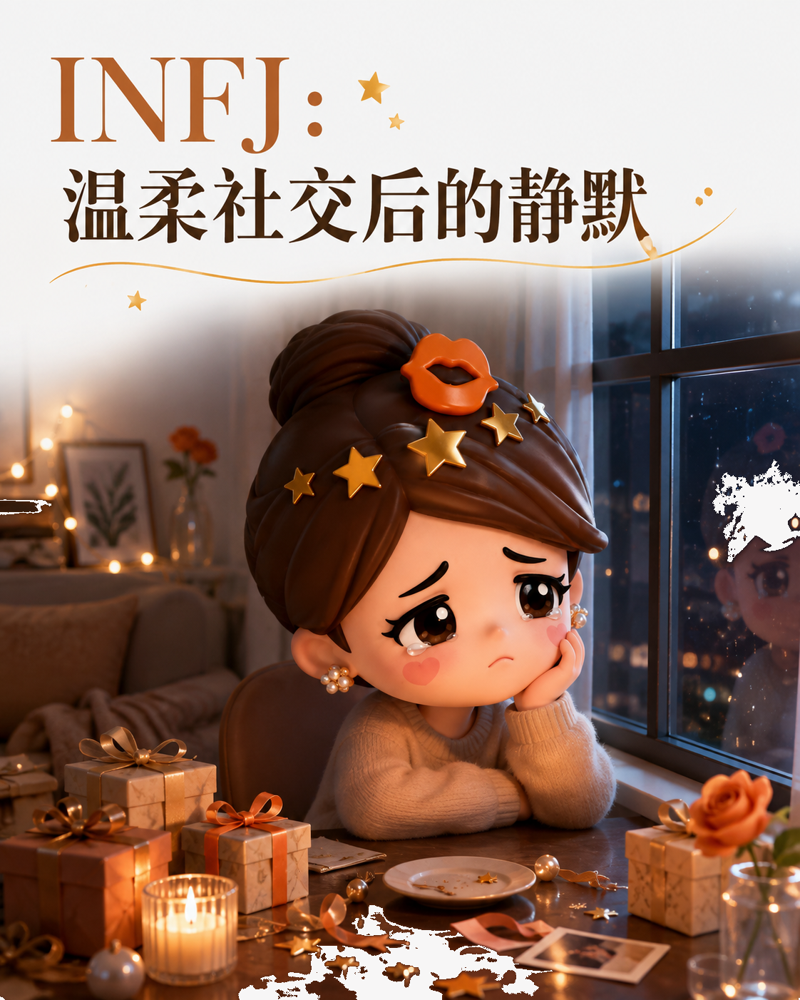

你以为的高冷，可能只是内心太满：MBTI内向感的八种形状
同样是“I人”，有人沉入思考，有人守护想象，也有人只是厌倦低质量互动。
先别急着把安静理解成疏离
一项MBTI调查显示，在“难与他人产生强烈联系”的类型中，INTP以77.46%居首，随后是INTJ（75.06%）、ISTP（75.05%）、ISTJ（72.34%）；唯一入围的外向型ENTP为50.39%。这只是自我感受的切片。
关键不在谁最安静，而在他们为何需要独处：有人搭建系统，有人守护价值，有人只想让关系少一点表演。
第一组：把独处当作思考空间
INTP容易被问题本身吸走。外界信号常不如一个未想通的概念重要；圈子虽小，认可对方后却愿意分享未经修饰的想法。

INTJ可以在会议上果断表达，却把恢复精力的时间留给长期计划和独立阅读。朋友对他们不是数量，而是是否值得投入时间。
ISTP需要动手解决问题的自由，常用共同做事建立信任。ISTJ把可靠落实在细节里，却容易因沉默负责、严肃认真而被误读。

第二组：人很多，心却未必在现场
ENTP说明外向不等于始终有连接感。他们能迅速打开话题、连续抛出点子，却可能像在主持节目，而不是被真正看见。

INFP有深厚的价值感与想象力，寻找的是理解其意义世界的人，而非高频陪伴。ISFP同样慢热，更依赖真实体验，宁愿亲近自然也不愿被黏住。

第三组：愿意照顾别人，却不容易被理解
INFJ能察觉他人情绪，显得温暖健谈，却也因此消耗自己。69.62%的INFJ表示结交新朋友不易，核心原因是厌倦被误解。

因此，“最i”不只是谁最少说话，而是谁最需要回收能量、拒绝无效互动，又在渴望深度关系时害怕被误读。给他们安静的入口，比催促热络更接近理解。